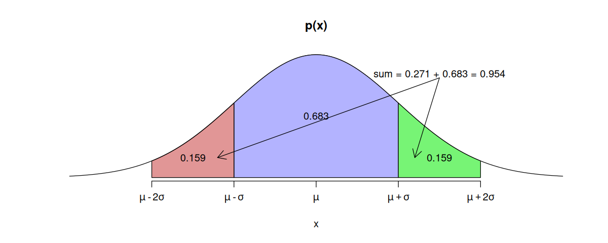
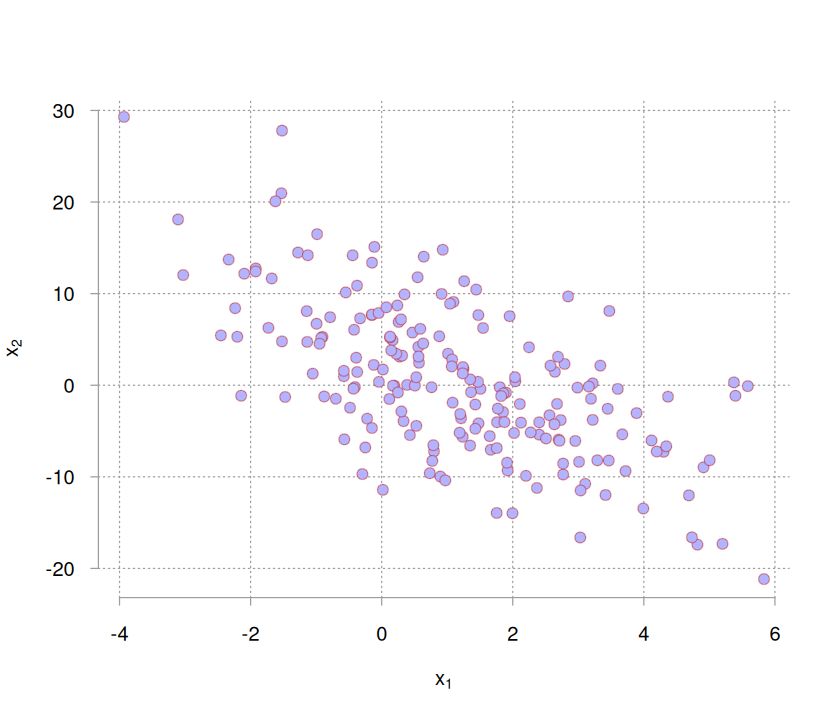
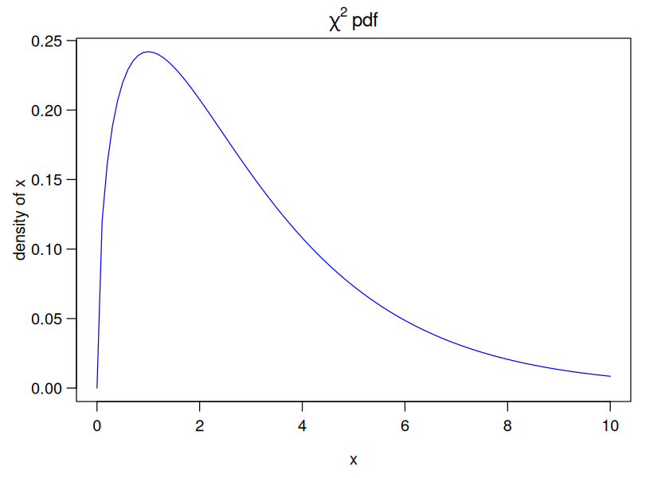
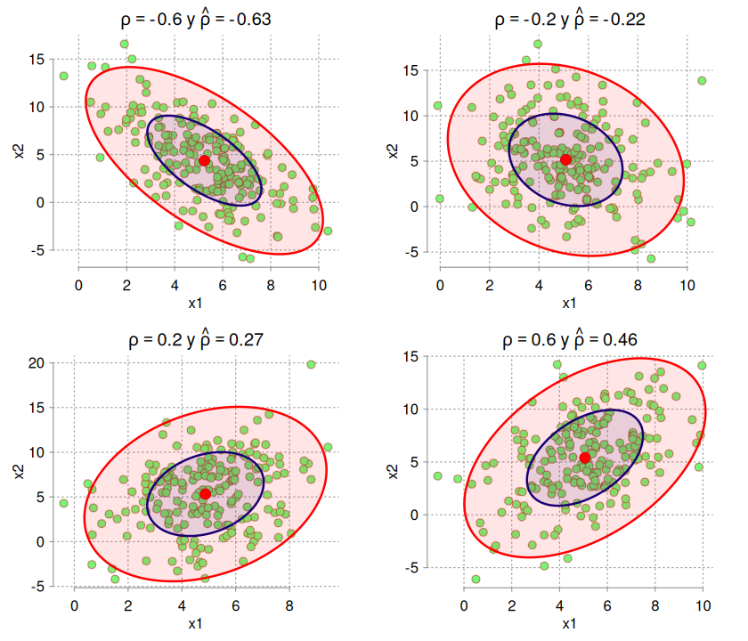
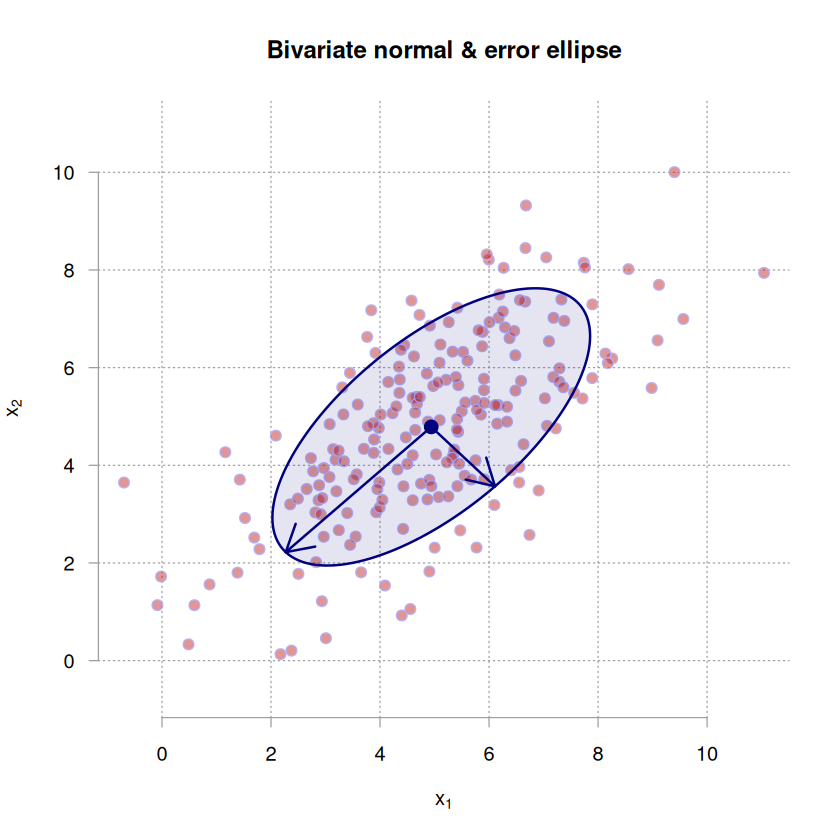
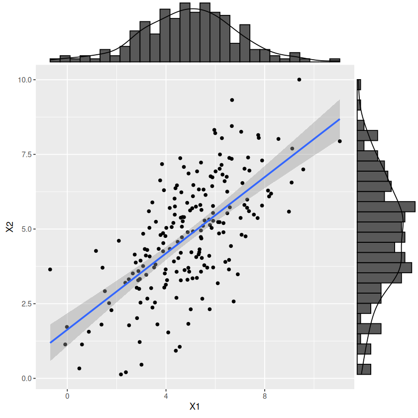
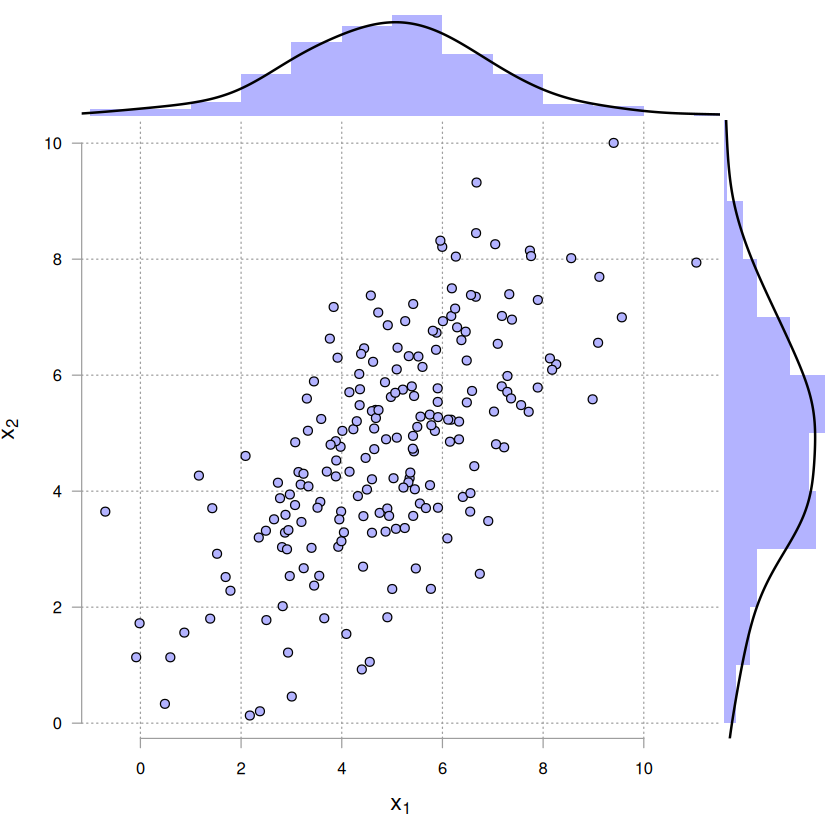

# cargar algunas funciones que se utilizarán para simular y graficar
source("../r_scripts/utilities.r")# dado que la distribución es simétrica, p(mu - sigma <= X <= mu+sigma)
# la región mu-sigma es igual que mu+sigma, por lo tanto, es suficiente
# con restarle a 1 la probabilidad p(mu-sigma <= X) * 2
(1 - (pnorm(-1, mean = 0, sd = 1)) * 2) |> round(3)
(1 - (pnorm(-2, mean = 0, sd = 1)) * 2) |> round(3)
# con 3 sigma cubre el 99 % del espacio
(1 - (pnorm(-3, mean = 0, sd = 1)) * 2) |> round(3)
# la probabilidad de x <= mu-sigma es
1 - (pnorm(1, mean = 0, sd = 1)) |> round(3)
# o equivalentemente
(pnorm(-1, 0, 1)) |> round(3)
0.683
0.954
0.997
0.159
0.159
# fijar tamaño de gráficos
options(repr.plot.width = 10, repr.plot.height = 4)
# graficar normal estándar
# colores
red_light <- "#be1b1b75"
blue_light <- "#B3B3FF"
green_light <- "#77f475"
curve(dnorm(x, 0, 1),
from = -3, to = 3,
axes = FALSE,
ylab = "",
main = "p(x)",
panel.first = {
axis(1,
at = c(-2:2),
labels = parse(text = c("mu-2*sigma", "mu-sigma", "mu", "mu+sigma", "mu+2*sigma"))
)
}
)
# función cargada en utilities.R
# graficar area de x entre [mu-sigma, mu+sigma]
plot_area_normal(
from_x = -1,
to_x = 1,
fill = blue_light
)
# graficar área de mu-2sigma <= x <= mu-sigma
plot_area_normal(
from_x = -2,
to_x = -1,
fill = red_light
)
plot_area_normal(
from_x = 1,
to_x = 2,
fill = green_light
)
# anotación de proporción de la curva
x_lab_pos <- c(-3 / 2, 0, 3 / 2) # posición en x
y_lab_pos <- dnorm(x_lab_pos, 0, 1) / 2 # posición en y
text(
x = x_lab_pos,
y = y_lab_pos,
# a la izquierda de la zona azul es
labels = c(
(pnorm(-1, 0, 1)) |> round(3),
(1 - (pnorm(-1, mean = 0, sd = 1)) * 2) |> round(3),
(pnorm(-1, 0, 1)) |> round(3)
)
)
arrows(
x0 = c(x_lab_pos[1] * 0.8, x_lab_pos[3] * 0.8),
y0 = c(y_lab_pos[1], y_lab_pos[3]),
x1 = rep(1.5, 2),
y1 = dnorm(rep(1.5, 2)) * 2.5,
length = 0.15,
code = 1
)
text(
x = 1.5,
y = dnorm(1.5) * 2.6,
label = glue::glue("sum = {(0.954 - 0.683)} + 0.683 = {0.683 + (0.954 - 0.683)}")
)
options(repr.plot.width = 7, repr.plot.height = 6)
rho <- -0.6
N <- 200
sigma_1 <- 2
sigma_2 <- 8
# por ecuación 11
Sigma <- matrix( # matriz de covarianza
c(
sigma_1^2, rho * sigma_1 * sigma_2,
rho * sigma_1 * sigma_2, sigma_2^2
),
ncol = 2
)
mu1 <- 1
mu2 <- 1
mu_vec <- c(mu1, mu2)
L <- t(chol(Sigma))
L # matriz triangular
set.seed(123)
u <- matrix(rnorm(2 * N), 2, N) # 2 filas, N/2 columnas
# sumar element-wise, mu1 + col_1, mu2 + col_2
x <- (mu_vec + t(L %*% u))
scatter_plot(
x[, 1], x[, 2],
# dos formas diferentes de anotaciones matemáticas
xlab = parse(text = "x[1]"), ylab = expression(x[2]),
color = red_light, fill = blue_light
)| 2.0 | 0.0 |
| -4.8 | 6.4 |

options(repr.plot.width=7, repr.plot.height=5)
par(
mgp = c(2.5, 0.75, 0),
mar = c(4, 4, 2, 2),
las = 1
)
curve(
dchisq(x, df = 3),
from = 0, to = 10,
ylab = 'density of x',
xlab = 'x',
main = expression(chi^2~pdf),
col = 'blue'
)
rho_vec <- c(-0.6, -0.2, 0.2, 0.6)
sigma_1 <- 2#
sigma_2 <- 4
sigma_vec <- c(sigma_1, sigma_2)
mu_vec <- c(5, 5)
par(
mfrow = c(2, 2),
mgp = c(1.5, 0.5, 0),
mar = c(3, 3, 2, 2)
)
for (rho in rho_vec) {
x <- sim_bivariate(rho, sigma_vec, mu_vec, N = 200, seed = 145)
scatter_plot(
x[, 1], x[, 2],
xlab = "x1",
ylab = "x2",
fill = green_light,
color = red_light,
main = parse(text = sprintf("rho == %s~y~hat(rho)==%s", rho, cor(x[, 1], x[, 2]) |> round(2)))
)
rad <- qchisq(p = c(0.5, .95), df = ncol(x))
rad <- sqrt(rad)
plot_ellipse(x, rad, colores = c("navy", "red"))
}
# Ahora veremos cómo se relacionan los eigenvectores y eigenvalores
# con los ejes del elipse
options(repr.plot.width = 7, repr.plot.height = 7)
sigma_1 <- 2
sigma_2 <- 2
mu_vec <- c(5, 5)
x <- sim_bivariate(0.6, c(sigma_1, sigma_2), mu_vec, 200, seed = 123)
scatter_plot(
x = x[ ,1], y = x[ ,2],
color = blue_light, fill = red_light,
xlim = range(x), ylim = range(x),
main = "Bivariate normal & error ellipse",
xlab = expression(x[1]), ylab = expression(x[2])
)
rad <- qchisq(p = .95, df = ncol(x))
rad <- sqrt(rad)
# radio a mu + sd, approx
rad2 <- qchisq(0.6826895, 2) |> sqrt()
plot_ellipse(x, rad2, colores = c('navy', 'red'))
covX <- cov(x)
eigVal <- eigen(covX)$values
eigVec <- eigen(covX)$vectors
# media empírica (vector)
emp_mean <- colMeans(x)
# obtener el eigenvector correspondiente al eigenvalor más largo
max_eigen_val_index <- which.max(eigVal)
max_eigVal <- eigVal[max_eigen_val_index]
max_eigVec <- eigVec[, max_eigen_val_index]
# correspondiente al eigenvalor más corto
min_eigVal <- eigVal[-max_eigen_val_index]
min_eigVec <- eigVec[ ,-max_eigen_val_index]
# dibujar el eje mayor
arrows(
# x0, y0
emp_mean[1], emp_mean[2],
# x1
emp_mean[1] + sqrt(max_eigVal) * max_eigVec[1] * rad2,
# y1
emp_mean[2] + sqrt(max_eigVal) * max_eigVec[2] * rad2,
col = 'navy',
lwd = 2
)
# dibujar el eje menor
arrows(
emp_mean[1], emp_mean[2],
emp_mean[1] + sqrt(min_eigVal) * min_eigVec[1] * rad2,
emp_mean[2] + sqrt(min_eigVal) * min_eigVec[2] * rad2,
col = "navy",
lwd = 2
)
# En R lo anterior sería
# matriz inversa
Sinv <- matrix(c(3.7, -2.4, -2.4, 2.5), ncol = 2, byrow = TRUE)
# vector centroide
mu <- c(3.1, 3)
# distancia euclideana p1
p1 <- as.matrix(c(5, 5))
norm(p1-mu, type = '2')
p2 <- as.matrix(c(5, 2))
norm(p2 - mu, type = "2")
# d de Malahanobis de p1; %*% es el producto punto, t(x) es la traspuesta de x
sqrt(t(p1-mu) %*% Sinv %*% (p1-mu))
# d de Malahanobis de p2
sqrt(t(p2-mu) %*% Sinv %*% (p2-mu))
2.75862284482674
2.14709105535839
| 2.262079 |
| 4.997699 |
d_teorico_cuadratico <- qchisq(1 - 0.05, 2)
sqrt(d_teorico_cuadratico)
2.44774683068082
library(tidyverse)
library(ggExtra)
colnames(x) <- c("X1", "X2")
p_scatter <- ggplot(
x |> as.data.frame(),
aes(x = X1, y = X2)
) +
geom_point() +
geom_smooth(method = "lm")
ggMarginal(p_scatter, type = "densigram")`geom_smooth()` using formula = 'y ~ x'
`geom_smooth()` using formula = 'y ~ x'
Warning message:
“The dot-dot notation (`..density..`) was deprecated in ggplot2 3.4.0.
ℹ Please use `after_stat(density)` instead.
ℹ The deprecated feature was likely used in the ggExtra package.
Please report the issue at <https://github.com/daattali/ggExtra/issues>.”
# revisar el código del script utilities.r
scatter_marginal(
x = x[, 1], y = x[, 2],
fill = blue_light, color = 1,
xlab = expression(x[1]),
ylab = expression(x[2]),
cex.lab = 1.4
)
import numpy as np
# Define the mean and standard deviation of the multivariate normal distribution
mean = (170, 70)
std = (10, 15)
# Generate a random sample from the multivariate normal distribution
samples = np.random.multivariate_normal(mean, std, 10000)
# Find the points that are within the desired range of heights and weights
in_range = np.where((samples[:, 0] > 160) & (samples[:, 0] < 180) & (samples[:, 1] > 60) & (samples[:, 1] < 80))
# Count the number of points that are within the range
count = np.count_nonzero(in_range)
# Print the probability of a person having a height between 160 and 180 cm and a weight between 60 and 80 kg
probability = count / len(samples)
print(probability)